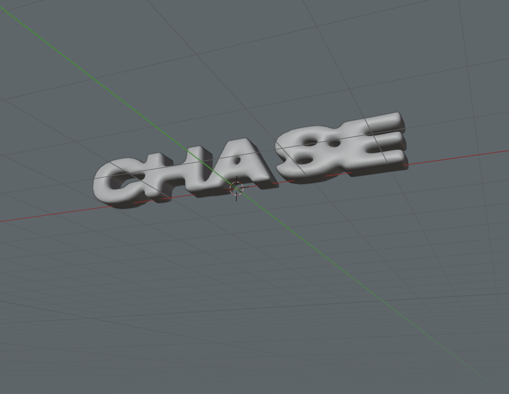
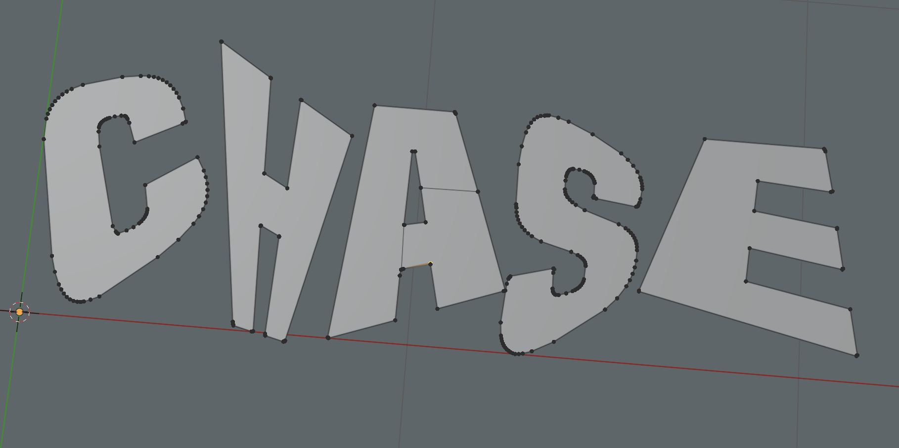
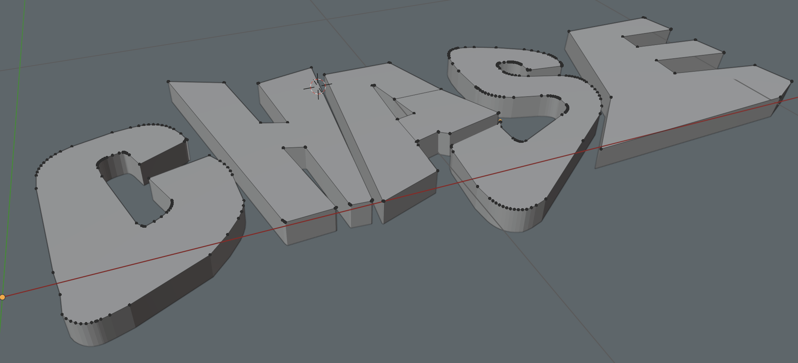
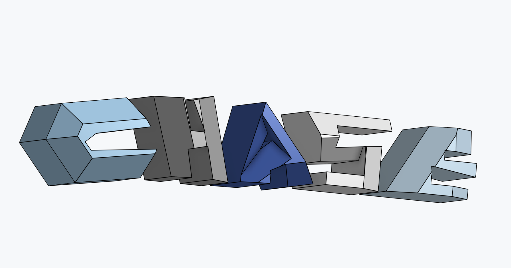
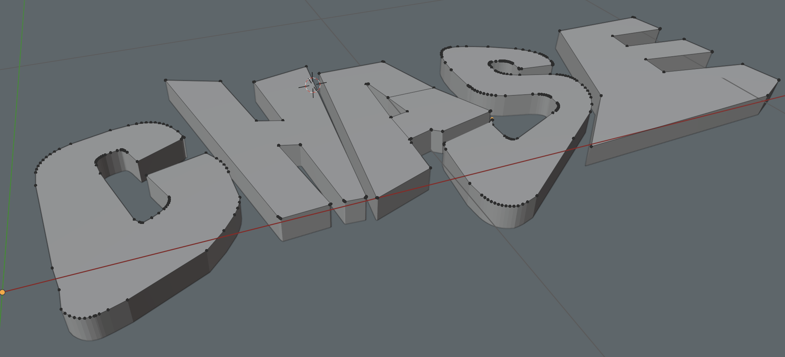
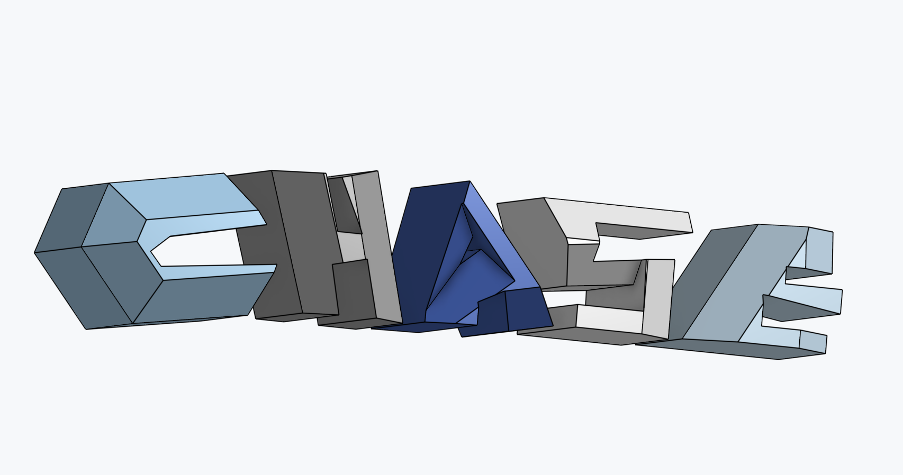
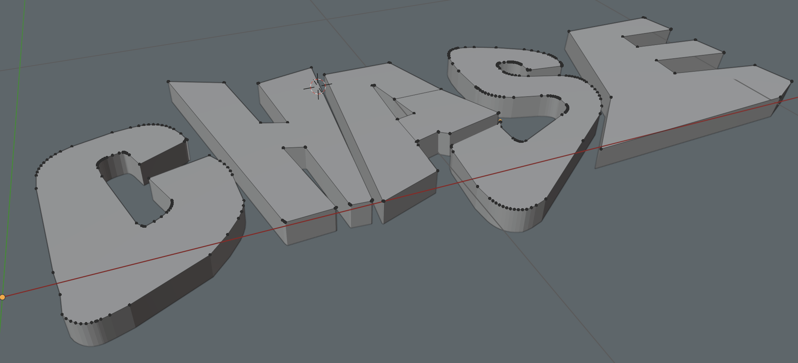
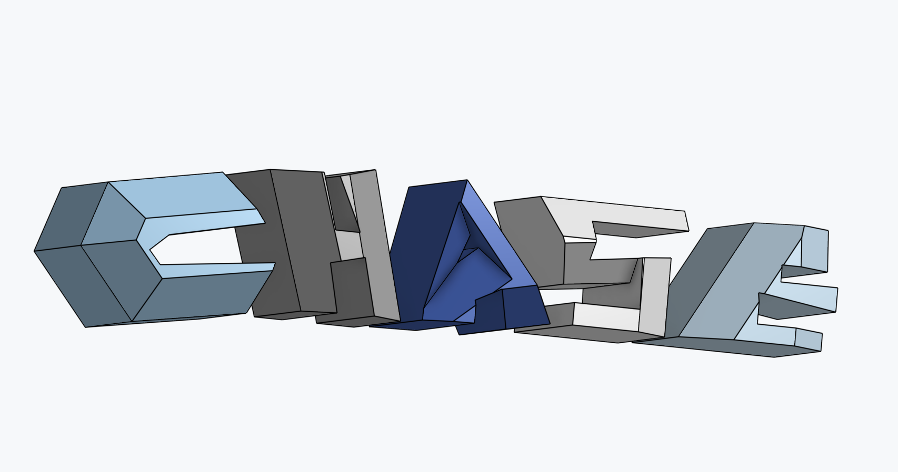
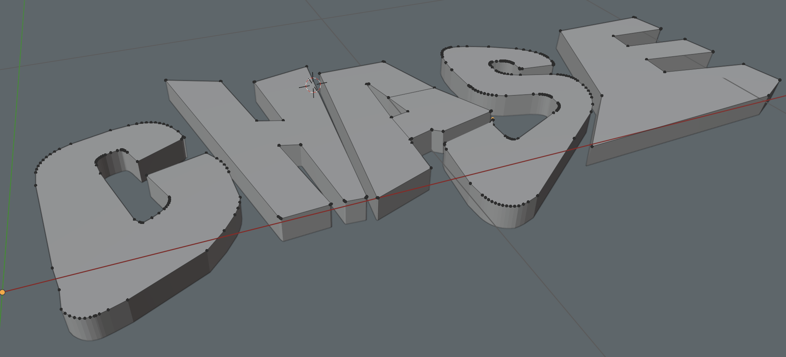
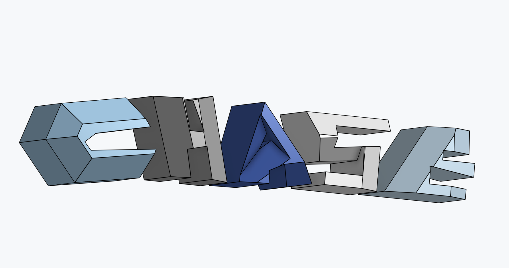

 





CHASE is for when I really don’t know what’s going on. It’s been an outlet
since ceramics took a back seat and engineering’s at the wheel. It’s part memory—capturing
fragments with friends—and part “make something that looks cool and unique.”
clock hands advance, seize everything is a reminder not to let fear of judgment stop me from creating.
Aside from this portfolio, I’ve never really made any of it public. Hope you enjoy.


Capturing memories in new ways is fun. Because it’s personal, I’m not comfortable posting the raw clips, but I hope these stills give the feel of it.
Shot on my dad’s old camcorder—the same one he used for home videos. I added a fisheye, powered it via a PowerPlay so I didn’t need tapes (records to mini-SD), and mounted the PowerPlay with a simple phone mount. Old tool, new use.